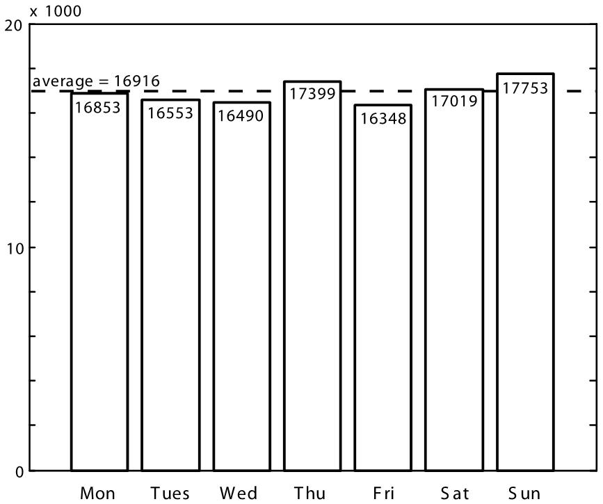

|
Lies, Damned Lies, and Statistics (in Geology)
Pieter Vermeesch, School of Earth Sciences, Birkbeck, University of London, UK.
According to Karl Popper's epistemology of critical rationalism, scientists should formulate falsifiable hypotheses rather than producing ad hoc answers to empirical observations. In other words, we should predict and test rather than merely explain [Popper, 1959]. Sometimes, statistical tests such as Chi-square, t, or Kolmogorov-Smirnov are used to make deductions more 'objective.' Such tests have been used in a wide range of geological subdisciplines, including geochemistry [Reimann and Filzmoser, 2000], geophysics [Anderson and Johnson, 1999], hydrology [Lørup et al., 1998], and geochronology [Sircombe and Hazelton, 2004]. However, it is important to note that 'statistically significant' is not the same as 'geologically significant.' I will illustrate this point with a geophysical example, in which Pearson's Chi-square test implies that earthquakes are unevenly distributed throughout the week, with seismic activity being particularly high on Sunday.
Statistics Invalidates Likely Geological Hypotheses According to the so-called Neyman-Pearson paradigm of statistics, theories can be tested by formulating a null hypothesis H0 (e.g., average global temperature has remained constant since 1900) and an alternative hypothesis Ha, which can be either 'two-sided' (e.g., global temperature has changed since 1900) or 'one-sided' (e.g., global temperature has risen since 1900). Given a quantitative data set D (e.g., a time series of temperatures), the decision whether or not to reject H0 in favor of Ha is made on the basis of S(D), the so-called test statistic. If S(D) is 'unlikely' to occur under H0, then H0 is rejected. The probability of observing a value at least as extreme as S(D) under H0 is called the 'p value,' and a cut-off value of p = 0.05 is often used to make a decision on a 95% confidence level. One problem with this approach is that it lumps together two factors: effect size and sample size. Given a large enough data set, statistical tests (especially the two-sided ones) will pick up any departure from the null hypothesis, no matter how small. The result is that geological hypotheses are never 'true' - they will always be rejected if lots data are available. To illustrate this point, consider the following, seemingly plausible null hypothesis: the occurrence of earthquakes does not depend on the day of the week. To test this hypothesis, a global database of 118,415 earthquakes of magnitude 4 or greater and occurring between Friday, 1 January 1999, and Thursday, 1 January 2009, was compiled from the USGS Web site (http://earthquake.usgs.gov). The earthquakes were tallied by weekday, resulting in a seven-bin histogram with bin counts D = {D1, D2,..., D7} varying between 16,348 (Friday) and 17,753 (Sunday), and an average of 16,916 (Fig. 1). Our null hypothesis is mathematically equivalent to saying that this histogram is uniformly distributed. A Chi-square test was used to evaluate the statistical significance of the observed scatter and the departure from uniformity. Given a set of expected and observed events (Ei and Di, respectively, for 1 ≤ i ≤ 7), Pearson's Chi-square statistic is given by S(D) = (Di-Ei)2/Ei, which can be shown to follow a Chi-square distribution with 6 degrees of freedom [Rice, 1995]. For the earthquake database, S(D) is 94. The likelihood of observing a result at least as extreme as this under the null hypothesis (i.e., the p value), is only 4.5 x 10-18. Because this is much less than 0.05, the null hypothesis has been clearly rejected.
Finding Geological Significance Why did the earthquake data fail the test for uniformity? After all, Pearson's Chi-square test should work particularly well on very large databases like ours. The answer is that this, actually, is exactly the problem: the test is too sensitive. Using the same proportions of earthquake occurrences but reducing the sample size by a factor of 10 results in a 10 times smaller Chi-square value (S(D) = 9.4), corresponding to a p value of 0.15, which is greater than 0.05 and fails to reject the null hypothesis. In conclusion, the strong dependence of p values on sample size makes them uninterpretable. The nonuniformity of the earthquake distribution could have a number of causes. Is it that background noise is perhaps lower on weekends, leading to an increased sensitivity of the seismometers? Or does the tolling of church bells on Sunday trigger false positives? Whatever the reason is, it is unlikely to be a geological one.
 Fig. 1: Histogram of 118,415 earthquakes occurring globally between 1999 and 2009, grouped by weekday.
References Anderson, G., and H. Johnson (1999), A new statistical test for static stress triggering: Application to the 1987 Superstition Hills earthquake sequence, J. Geophys. Res., 104, 20,153-20,168, doi:10.1029/1999JB900200.
Lørup, J., J. Refsgaard, and D. Mazvimavi (1998), Assessing the effect of land use change on catchment runoff by combined use of statistical tests and hydrological modelling: Case studies from Zimbabwe, J. Hydrol., 205, 147-163, doi:10.1016/S0168-1176(97)00311-9.
Popper, K. R. (1959), The Logic of Scientific Discovery, Hutchinson, London.
Reimann, C., and P. Filzmoser (2000), Normal and lognormal data distribution in geochemistry: Death of a myth. Consequences for the statistical treatment of geochemical and environmental data, Earth Environ. Sci., 39(9), 1001-1014.
Rice, J. A. (1995), Mathematical Statistics and Data Analysis, Duxbury, Pacific Grove, Calif.
Sircombe, K. N., and M. L. Hazelton (2004), Comparison of detrital zircon age distributions by kernel functional estimation, Sed. Geol., 171, 91-111, doi:10.1016/j.sedgeo.2004.05.012. |